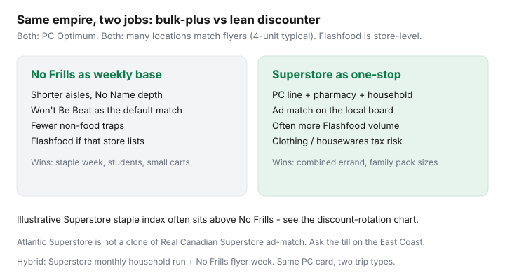

Food & Groceries · Canada
Real Canadian Superstore vs No Frills: which Loblaw discounter should be your base?
Shoppers treat Superstore like a junior Loblaws — nicer lights, higher prices, skip it. That is half true on a boring staple basket and fully wrong as a system. Real Canadian Superstore is still a Loblaw discount-adjacent box: PC Optimum, a deep PC line, household goods, a pharmacy, ad match at many locations, and often a busier Flashfood fridge. No Frills is the leaner discounter: No Name depth, fewer traps, Won’t Be Beat as a religion.
This is intra-Loblaw choice architecture for people who already decided not to make Loblaws their milk store. Assortment, price-match parity, Flashfood patterns, when one-stop Superstore wins, when No Frills’ smaller box wins, and hybrid households that use different bases by trip type. Atlantic Superstore is not a clone — its ad-match habit is weaker in community reports. Ask the till down east.
Disclosure: PC Financial cards, grocery gift cards, and cashback portals are offer types. Flashfood is usually non-affiliate. Saving Optimizer may earn a commission if we later add partner links. We do not currently claim Loblaw, PC Financial, or Flashfood partnerships. Policies are store-level. Photograph the competitor board.
Key takeaways
- Both banners share PC Optimum. Grocery earn is still mostly loaded offers — Superstore is not a points spa.
- No Frills usually wins a short staple list. Superstore wins when you would have made a second trip for pharmacy, paper, or a PC SKU No Frills does not carry.
- Ad match: Superstore’s public collection page matches identical items up to four units against listed local competitors, with the same style of exclusions as Won’t Be Beat (loyalty-only prices, spend-X, clearance).
- Flashfood exists at select No Frills and many Superstores (Loblaw–Flashfood, 2 Mar 2026 release: 900+ Loblaw stores). Volume is store-level. Freeze same night.
- Hybrid is allowed: Superstore monthly household + No Frills flyer week. Do not run both every Saturday.
Assortment and shopability differences
No Frills is built to move a grocery list. Superstore is built to capture the list plus the rest of the errand. That shows up as:
- Private label: No Frills is No Name first, with a thinner PC set. Superstore carries the PC ladder (including Black Label as a treat aisle). If your cart is “interesting PC,” Superstore has it; if your cart is oats and beans, No Frills is enough.
- Non-food: Superstore clothing, housewares, electronics, and seasonal. Convenient. Also how a $90 grocery trip becomes $140. No Frills still sells paper and detergent without a patio-furniture season.
- Shopability: Superstore can be a 20-minute walk from dairy to till. Time is a cost. A small No Frills with a tired produce case is a different cost.
Relative staple-basket indexes in our discount rotation put Superstore above the lean discounters and below full-service Loblaws. Treat that as a hypothesis you prove with 12 SKUs, not a Statistics Canada series.

Price match and PC Optimum parity
PC Optimum does not care which Loblaw grocery banner you scanned. Offers, Shoppers bonus events, and Esso math are the same program — maximize PC Optimum. Superstore does not pay extra base points for being bigger.
Price match is where the banners diverge in branding more than in shape:
| No Frills | Real Canadian Superstore | |
|---|---|---|
| Name | Won’t Be Beat | Ad match / Deals Centre language |
| Typical cap | 4 units | 4 units (public RCSS page) |
| Identical item | Yes; produce/meat pickier | Same brand, size, attributes; unbranded produce/meat/bakery by type |
| Won’t match | Loyalty-only, spend-X, Save it Forward windows, pharmacy, gas | Same family of exclusions, plus third-party counters (post office, gas, dry cleaners) |
| Proof | Print or official digital flyer | Original print or official digital ad, complete dates and size |
Walkthroughs: Won’t Be Beat and the Superstore collection page (realcanadiansuperstore.ca Deals Centre). Atlantic Superstore shoppers: several 2026 roundups say ad match is not a reliable East Coast twin. Ask. Do not quote an Ontario policy at a Halifax till.
PC Financial Mastercard earn at both banners if you pay in full — no-fee vs Insiders math. Amex still has gaps at many Loblaw tills.
Flashfood availability patterns
Loblaw’s 2 March 2026 Flashfood release: shoppers saved $58 million in 2025; the app is in over 900 Loblaw grocery stores including select No Frills, Maxi, Real Canadian Superstore, Atlantic Superstore, Loblaws, Wholesale Club, Zehrs, Your Independent Grocer, Provigo, and Dominion in Newfoundland.
Pattern, not a promise: Superstores often list more meat and produce volume because the box is larger. Some No Frills list little or nothing. Some Superstore fridges are locked or empty at 6 p.m. The app is the inventory. Pickup on the route, freeze same night, ignore PC points on Flashfood (community reports: Flashfood typically does not earn Optimum). Fees and drive math: Flashfood Canada guide.
You cannot price-match a Flashfood clearance price onto a regular tray. Superstore’s ad-match page excludes clearance and loyalty-program offers. Do not try.
When Superstore’s one-stop wins
- You need grocery + pharmacy + a household refill in one parking session, and the documented grocery gap versus No Frills is smaller than a second trip.
- The PC SKU or pack size you actually use is only at Superstore.
- Your No Frills produce is consistently poor and the Superstore case is not.
- Flashfood meat you will freeze is on the way home from Superstore, not from the leaner store.
- You will not wander clothing. If you will, No Frills is cheaper even at a $8 grocery premium.
When No Frills’ leaner model wins
- The list is groceries. You are not buying a toaster.
- You want less aisle time and fewer “while I’m here” SKUs.
- Won’t Be Beat plus a short Flipp list covers the week’s proteins.
- You are price-sensitive on No Name staples and do not miss PC Black Label.
- Parking and walking time at Superstore wipe a $4 match.
Hybrid households: different bases by trip type
You do not have to pick a religion. You have to pick a default and exceptions:
- Weekly flyer shop: No Frills (or Superstore if it is the only Loblaw box within 15 minutes).
- Monthly household: Superstore for paper, detergent, pharmacy, and PC items you actually finish — or Costco if that is already the bulk stop.
- Flashfood intercept: whichever store listed the meat, if it is on the commute and you can freeze tonight.
- Never: Superstore on Saturday and No Frills on Sunday “to compare.” That is two impulse zones. Flipp already compared.
West-heavy cities often have Superstore and no convenient No Frills — then Superstore is the discounter, and Save-On or Walmart is the foil. See the Western Canada strategy. Ontario still has the luxury of choosing. Use it on purpose.
Sources & date stamps
- Real Canadian Superstore, Ad match / Deals Centre legal copy: 4-unit cap, identical items, exclusion list (reviewed 20 Sep 2026).
- No Frills Won’t Be Beat public policy language (reviewed 16 Sep 2026 in our price-match guide).
- Loblaw and Flashfood news release, 2 Mar 2026 ($58 million; 900+ stores; banner list including select No Frills and Superstore).
- True Canadian Finds / community notes on Atlantic Superstore ad-match differences; Vancouver No Frills vs Superstore comparison posts (directional).
Frequently asked questions
Is Superstore more expensive than No Frills?
On a fixed staple list, often a bit, sometimes a lot on produce and meat weeks. Superstore can still win the all-in trip if it replaces a second store or a pharmacy run. Compare your 12 items tax-in, then add time.
Do both stores use PC Optimum?
Yes. Same program, same offers-first grocery earn. You can earn at Superstore and redeem at No Frills. Flashfood purchases typically do not earn points.
Does Superstore price match?
Many Real Canadian Superstore locations match a listed competitor’s identical advertised item, up to four units, with exclusions similar to Won’t Be Beat. The competitor list is store-level. Atlantic Superstore is not a safe clone — ask.
Which store has better Flashfood?
Whichever location listed the item. Superstores often show more volume because the box is larger, but empty fridges exist at both banners. The app is the inventory; freeze the same night.
Can I use Superstore for some trips and No Frills for others?
Yes. Default one weekly fulfilment store and use the other for a monthly household run or a Flashfood intercept. Two grocery shops every weekend is how the hybrid plan fails.